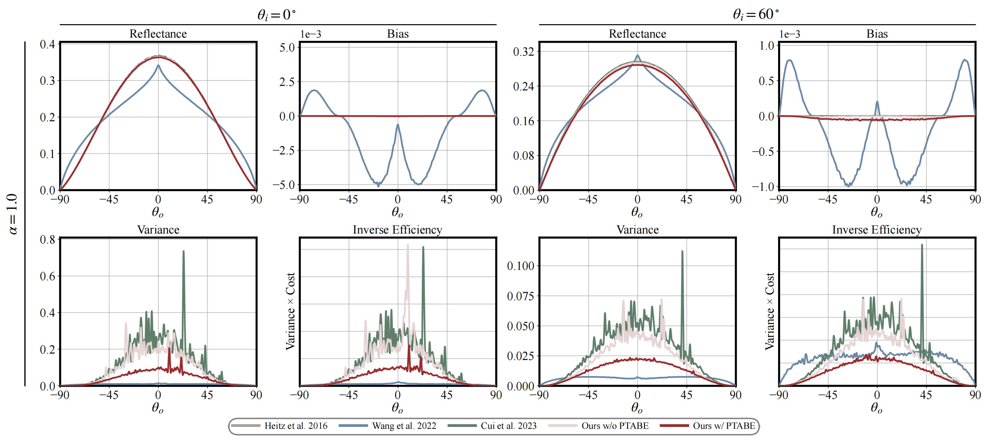

Successive Height Preintegration for a Height-Interdependent Path Formulation of Multiple Bounces in Smith Microfacet BRDFs
Abstract
Smith microfacet models are widely used to describe the interaction of light with surfaces. However, conventional microfacet models account for only a single bounce on microsurfaces, which leads to energy loss. To address the problem of missing energy, several unbiased methods have been proposed to compute multiple bounces on Smith microsurfaces. In addition, a position-free multiple-bounce microfacet model has been introduced by assuming that each bounce of a light path is height-independent, leading to lower variance but biased results. In this paper, we propose a novel derivation of multiple-bounce Smith microfacet bidirectional reflectance distribution functions (BRDFs) based on a partial adoption of the independent-bounce assumption. Our model treats most bounces as height-interdependent, leading to a height-interdependent path formulation. We further propose a successive height preintegration to make this formulation position-free. Although our model still exhibits an extremely small bias, it achieves lower variance than prior unbiased methods. Furthermore, we introduce a path type-aware BRDF evaluation that further reduces variance.
Result

BibTeX
@inproceedings{Zhang2026SuccessiveHeightPreintegration,
author = {Zhang, Siyuan and Funatomi, Takuya and Fujimura, Yuki and Mukaigawa, Yasuhiro and Kubo, Hiroyuki},
title = {Successive Height Preintegration for a Height-Interdependent Path Formulation of Multiple Bounces in Smith Microfacet BRDFs},
booktitle = {Special Interest Group on Computer Graphics and Interactive Techniques Conference Conference Papers},
year = {2026},
pages = {1--10},
publisher = {Association for Computing Machinery},
address = {New York, NY, USA},
doi = {10.1145/3799902.3811194},
url = {https://doi.org/10.1145/3799902.3811194}
}